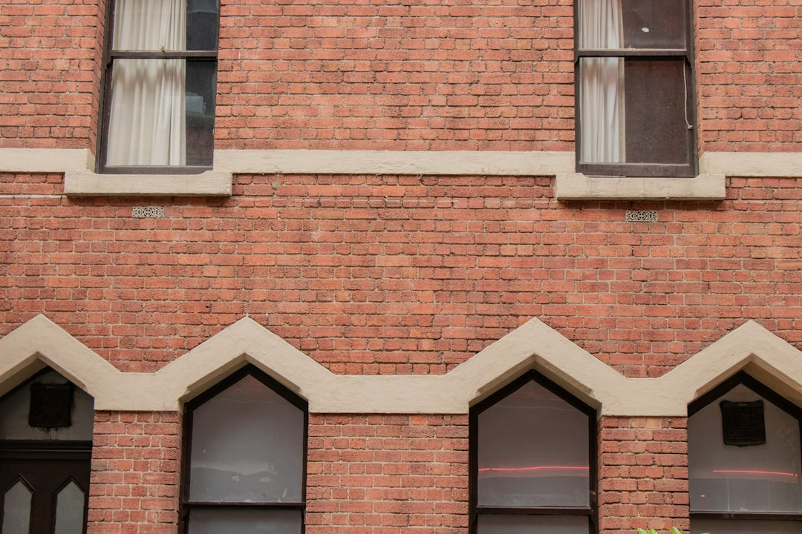

A Melbourne kitchen project is usually a staged decision about scope, quote detail and lead time. The published guidance says most fully fitted renovations sit between $25,000 and $60,000, budget refreshes commonly start from $12,000 to $30,000, and premium work can exceed $80,000. For a mid range full renovation, allow roughly 6 to 12 weeks from contract signing to handover, with 2 to 4 weeks of site work once cabinetry is ready.
For homeowners comparing kitchen renovation melbourne options, the useful starting point is not a style label, but the work needed, the quote structure and the timing risk.
Kitchen Renovation Melbourne Explained
Melbourne Kitchen Reno frames the early brief around kitchen size, suburb, scope and rough budget, then a renovator callback where the project size, style and timeline are discussed. That sequence is useful because it separates the wish list from the fixed parts of the job, such as measurements, services, cabinetry lead time and whether the existing layout can stay.
A strong first brief should name the current problems before naming finishes. Poor storage, a narrow galley, an awkward apartment footprint or a period home needing made to measure joinery all point to different design work. The published page also distinguishes full renovations from custom cabinetry and small apartment kitchens, so the homeowner should be ready to explain whether the job is a refresh, a full rebuild, or a compact layout problem.
- Confirm whether plumbing or electrical updates are part of the scope.
- Ask how demolition, manufacture and install are handled in the quote.
- Check whether the written quote is fixed price and how variations are recorded.
Cost Signals Before A Quote
The clearest budget signal is the level of intervention. A door front, benchtop and splashback refresh with no layout change sits in a different category from new cabinetry, benchtops, plumbing, electrical updates, splashback and hardware. Natural stone, custom joinery and a butler's pantry are identified as premium features on the source page, so they should be treated as budget drivers rather than small upgrades.
The published calculator is described as an indicative starting point, not a final price. That matters because measured cabinetry, stone fabrication, hardware brands and appliance choices can shift the real number. A homeowner comparing quotes should ask each renovator to show what is included, what is assumed, and what would trigger a variation after the contract is signed.
For adjacent planning, the Melbourne kitchen design guide is a useful companion when the layout conversation needs to happen before finishes are chosen.
Timing And Site Disruption
The source page gives a practical renovation sequence: contract signing, cabinetry and stone fabrication, site work, finishing and handover. For a mid range full renovation it says to allow roughly 6 to 12 weeks from contract signing to handover. Cabinetry and stone fabrication are described as a 4 to 6 week lead in, with on site work typically taking 2 to 4 weeks once cabinetry is on site.
That timing makes early product decisions important. Cabinets, stone and appliances drive the front half of the project, so a late change can affect more than the visible finish. The more detailed question for a renovator is whether the schedule depends on cabinetry manufacture, stone templating, appliance delivery, owners corporation documentation or access limits in an apartment building.
- Ask when measurements are finalised.
- Ask which selections must be locked before manufacture starts.
- Ask what happens if appliances or stone are delayed.
Who This Applies To
This guidance fits Melbourne homeowners who are weighing a fixed price written quote for a kitchen renovation, especially where the job includes custom cabinetry, benchtops, plumbing or electrical updates. It also applies to owners of period terraces, Edwardians and bungalows where made to measure joinery may suit the home better than a flat pack run.
Apartment owners have a different checklist. The source page specifically mentions compact layouts, owners corporation documentation, acoustic underlay and clever storage for small and apartment kitchens across Richmond, Brunswick, Footscray and the inner city. Those details should be raised early because building access, documentation and storage design can shape both the quote and the schedule.
Homeowners planning a butler's pantry should treat it as a design stage question, not an assumption. The page describes it as a secondary prep and storage room often used on larger renovations, with suitability depending on floor plan and budget.
Checks Before You Commit
The page says renovators are VBA registered, and also refers to HIA or Master Builders accreditation. A homeowner can use that as a prompt to ask which individual or business will contract the work, who supervises site activity, and how the written contract identifies the scope, materials and exclusions.
Quote comparison should stay concrete. Confirm whether soft close runners and hinges are included in the base price, and ask which hardware brand is specified. If domestic building insurance is required for the contract value, the page says it is part of the build and handover stage, so the homeowner should ask when that documentation is issued and how it is tied to the signed contract.
- Get the scope in writing before comparing totals.
- Separate allowances from fixed inclusions.
- Ask how variations are priced and approved.
- Keep design decisions tied to measured drawings, not mood board preferences alone.
- Define the scope. Decide whether the project is a refresh, full renovation, custom joinery job or compact apartment redesign.
- Prepare the brief. List the kitchen size, suburb, budget range, must have features and any layout problems before the callback.
- Use the consult. Ask the renovator to measure the space, discuss layout options and explain likely cost drivers.
- Compare the written quote. Check inclusions, exclusions, hardware, variations, timing and contract terms before signing.
- Plan the lead time. Lock selections early enough for cabinetry, stone and appliance ordering to proceed without avoidable delay.
| Path | When it fits | Quote questions |
|---|---|---|
| Budget refresh | Door fronts, benchtop and splashback with no layout change | What stays, what is replaced, and what is excluded? |
| Full renovation | New cabinetry, benchtops, plumbing, electrical updates and install | Who manages design, manufacture, demolition and handover? |
| Custom joinery | Period homes or made to measure cabinetry needs | What finish style, hardware and cabinetry detail are included? |
| Apartment kitchen | Compact layouts with possible owners corporation documentation | What access, acoustic underlay and storage constraints affect the plan? |
Common questions
What is a realistic budget range to start with? The published guide says most fully fitted Melbourne kitchen renovations land between $25,000 and $60,000. It also says budget refreshes commonly start from $12,000 to $30,000, while premium renovations can exceed $80,000.
How long should a mid range full renovation take? The stated guide is roughly 6 to 12 weeks from contract signing to handover. It breaks that into cabinetry and stone fabrication, site work, and finishing.
Are apartment kitchens treated differently? Yes. The source page calls out compact layouts, owners corporation documentation, acoustic underlay and clever storage as apartment considerations, so those should be discussed before quote comparison.
Is a butler's pantry worth including? It depends on floor plan and budget. The source describes it as a secondary prep and storage room often suited to larger renovations, so it should be tested during design rather than assumed.
This guide covers budget, timing, scope and quote checks for Melbourne kitchen projects using the supplied published source.